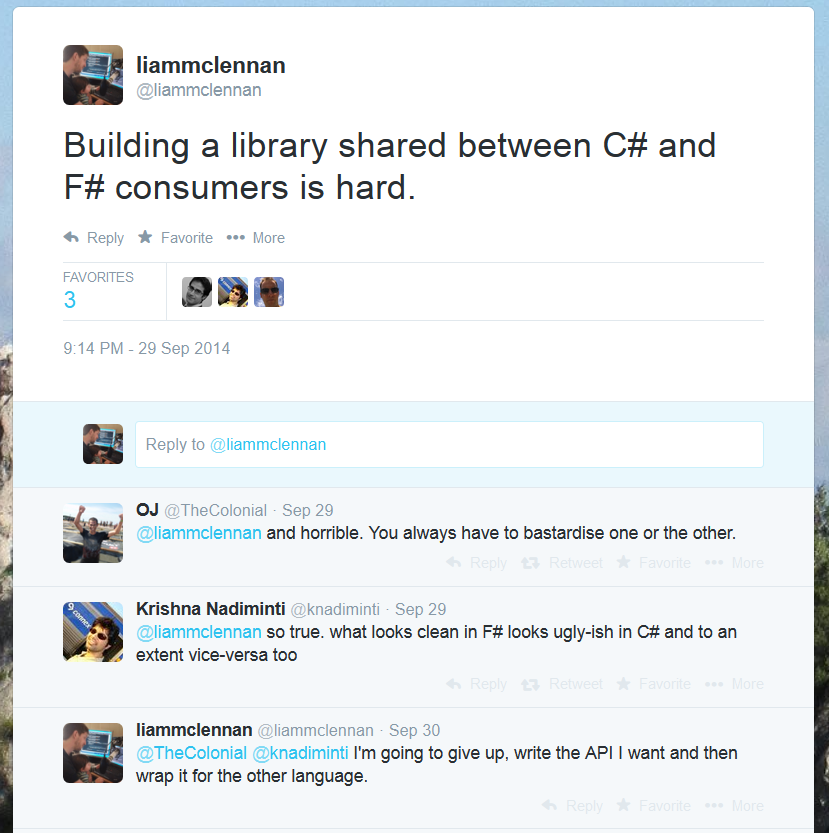

PostgresDoc is a simple F# library for working with document data in Postgresql. Recently, I have been experimenting with ways to use it from C#.
Using an F# Library from C#
It is certainly possible to use an F# library from C#, but the syntax can be difficult. To ease the pain I experimented with ways to make the API more C# friendly, and ultimately gave up.

Wrapping an F# Library for C# consumers
The approach that ultimately worked for me was to create a new C# project that wraps the F# version of PostgresDoc and provides an API that is optimised for C#. The unit of work is represented by a Queue. New operations are added via the Enqueue method, and created via static factory methods on the Operation class, like so:
unitOfWork.Enqueue(Operation.Insert(ernesto._id, ernesto));
The PostgresDocCs C# API
Here is a simple example of working with a document from C#:
public class Person
{
public Guid _id { get; set; }
public string Name { get; set; }
public int Age { get; set; }
public string[] FavouriteThings { get; set; }
}
var ernesto = new Person
{
_id = Guid.NewGuid(),
Name = "Ernesto",
Age = 31,
FavouriteThings = new[] { "Pistachio Ice Cream", "Postgresql", "F#" }
};
var connString = "Server=127.0.0.1;Port=5432;User Id=******;Password=*****;Database=testo;";
var unitOfWork = new Queue<Operation<Guid>>();
// insert a document
unitOfWork.Enqueue(Operation.Insert(ernesto._id, ernesto));
// modify a document
ernesto.Age = 32;
unitOfWork.Enqueue(Do.Update(ernesto._id, ernesto));
// persist the changes in a transaction
UnitOfWork.Commit(connString, unitOfWork)
Querying
var ernesto = Query<Person>.For(
connString,
"select data from Person where id = :id",
new Dictionary<string, object> { {"id", ernesto._id} });